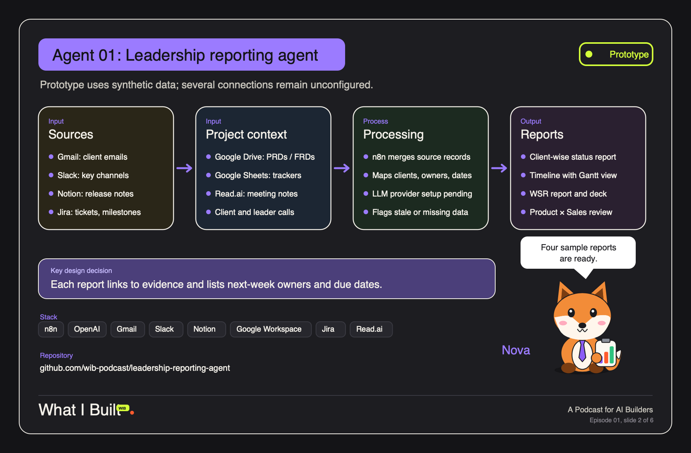

What I Built ✳ Episode 01 · Agent 01
Leadership Reporting Agent
An n8n workflow that reads a week of project signals from Gmail, Slack, Notion, Google Drive, Google Sheets, Jira and meeting notes, then writes four leadership-ready reports with evidence on every line.

How it works
Input
- Gmail client threads
- Slack channels
- Notion release notes
- Drive PRDs and FRDs
- Sheets project trackers
- Jira tickets and milestones
- Read.ai meeting notes
Process
- Pull the last 7 days from every source
- Normalize each item to one evidence shape
- LLM synthesizes status as JSON
- Quality gate drops claims with no matching source and flags stale or missing owners and dates
Output
- Client-wise status report
- Timeline report with a Gantt view
- Weekly status review and deck outline
- Product × Sales connect brief
Sample reports (PDF)
Client statusAccount health, six-month progress, risks, next-week actions
Timeline deliverySix-month Gantt, milestone ledger, critical path
Weekly status reviewPortfolio trend, leadership asks, deck outline
Product × Sales connectDemand funnel, feature readiness, agenda
Straight out of the n8n workflow (HTML)
Client-wise statusRendered by the Client report node
Timeline + GanttRendered by the Timeline report node
WSR + deck outlineRendered by the WSR node
Product × SalesRendered by the Product × Sales node
Showcase: client portfolioFrom the no-credentials demo workflow
Showcase: leadership connectFrom the no-credentials demo workflow
Every client, person, ticket and number on this page is invented for the podcast. No real inbox, workspace or tracker was read to make these samples.